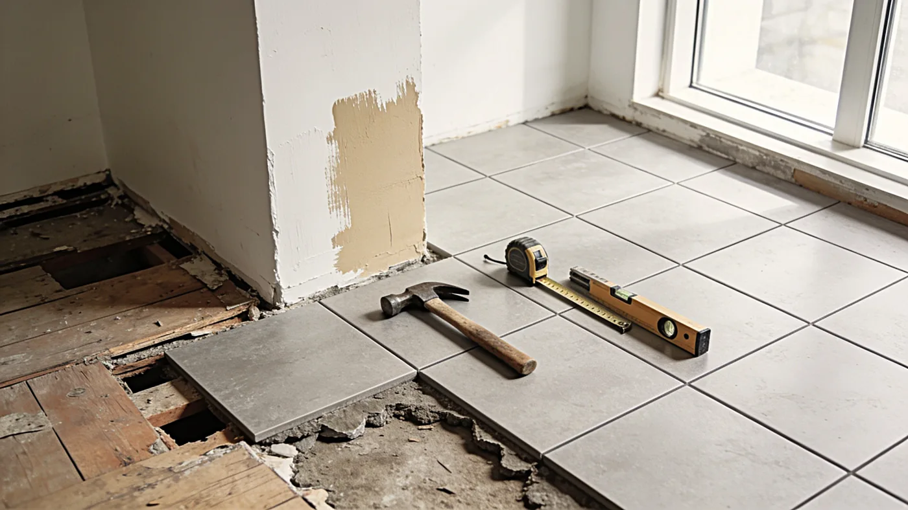

Tjänster
Hållbara lösningar av hög kvalitet
På AP Mur & Kakel erbjuder vi ett komplett hantverk inom kakel, klinker, kalksten, mur, puts och stenläggning. Vi tar oss an både mindre och större projekt och skapar lösningar som är genomtänkta, hållbara och estetiskt tilltalande. Vårt arbete bygger på noggrannhet, erfarenhet och ett tydligt fokus på kvalitet. För dig innebär det ett tryggt samarbete, tydlig kommunikation och ett resultat som håller över tid. Vi samarbetar med erfarna och pålitliga partners, vilket ger oss möjligheten att utföra både mindre så väl som större och mer komplexa projekt, alltid med samma höga krav på kvalitet, struktur och utförande.
Vi befinner oss i Kalmar där vi utför majoriten av våra arbeten men utför även uppdrag i närliggande områden så som Öland, Torsås och Mönsterås.
Kakel & klinker
Vi utför allt inom kakel och klinker, från kompletta badrum till kök, entréer och mindre ytor. Varje projekt utgår från noggrant utfört underarbete, planering och precision i varje detalj. Genom beprövade metoder och material av hög kvalitet skapar vi ytor som är funktionella, hållbara och visuellt genomarbetade. Oavsett om du vill förnya ett mindre kök eller skapa ett helt nytt badrum ser vi till att helheten blir både praktisk och estetiskt tilltalande.
Mur & puts
Vi utför mur- och putsarbeten i alla skeden, från mindre renoveringar till större konstruktioner och fasadarbeten. Det kan handla om allt från att mura väggar och konstruktioner till att putsa fasader och interiöra ytor. Med rätt materialval och metod säkerställer vi stabila, tåliga och tekniskt korrekta lösningar, anpassade efter svenska förhållanden. Oavsett projektets omfattning är målet alltid detsamma: ett hållbart resultat där funktion, livslängd och finish är i balans.
Stenläggning
Vi erbjuder professionell stenläggning för uppfarter, gångar, uteplatser och andra utomhusytor. Genom noggrant markarbete, korrekt uppbyggnad och precision i utförandet skapar vi ytor som är både funktionella och visuellt harmoniska. Resultatet är hållbara lösningar som klarar belastning, väder och tidens påverkan.
Kalksten & natursten
Vi utför uppdrag inom kalksten och natursten för både inomhus- och utomhusmiljöer. Kalksten är ett exklusivt naturmaterial som kräver erfarenhet, förståelse och ett noggrant arbetssätt. Genom rätt metoder, anpassade produkter och känsla för materialets karaktär skapar vi ytor med hög precision och naturligt uttryck. Resultatet är tidlöst, hållbart och byggt för att åldras vackert över tid.
Ditt projekt börjar här
Har du planer på att renovera, bygga om eller skapa nya ytor? Kontakta oss så hjälper vi dig att förverkliga ditt projekt med ett hantverk präglat av kvalitet, noggrannhet och yrkesstolthet.
Tillsammans skapar vi lösningar som är genomtänkta i varje detalj och anpassade efter dina behov och visioner från idé till färdigt resultat. Med erfarenhet, rätt materialval och ett genomtänkt arbetssätt skapar vi lösningar som håller över tid, både funktionellt och estetiskt.
Kontakta oss nu